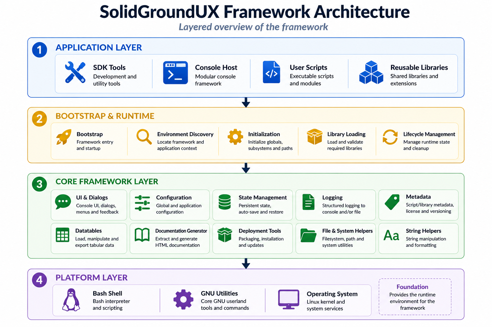

Layered Architecture
The framework is organized into several logical layers.

The diagram provides a high-level overview of the major framework
components and their relationships. The remainder of this documentation
explores each layer and subsystem in greater detail.
At the foundation are the core libraries. These provide reusable functionality
such as configuration management, state handling, command-line argument processing,
user interaction, metadata handling, logging, deployment support, and
documentation generation.
Above the library layer are executable applications. These are standalone tools
such as workspace generators, deployment utilities, package builders, metadata
editors, and documentation generators.
The framework also supports modular console applications. Independent modules can
register menu groups and menu items with a common host application, providing a
lightweight plugin architecture implemented entirely in Bash.